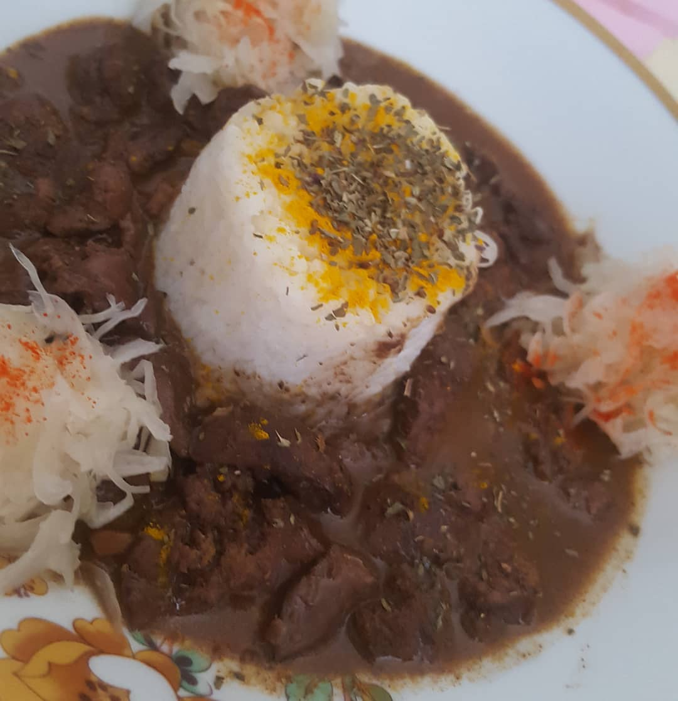

Dusená ryža podľa @matejikovarenata — Normy Jedál
Kuracia pečeň na šťave s jazmínovou ryžou a kyslou kapustou
#kyslakapusta #kvasenakapusta #dusenaryza #jazminovaryza #kuraciapecen #dusenakuraciapecen #hendnade #fitjedlo #finomételek #domacejedlo #foodphotography #foodbloger #teplyobed #teplavecera #mnam #yemek #dobrejedlo